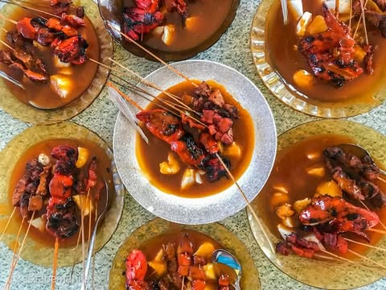
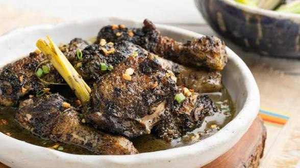
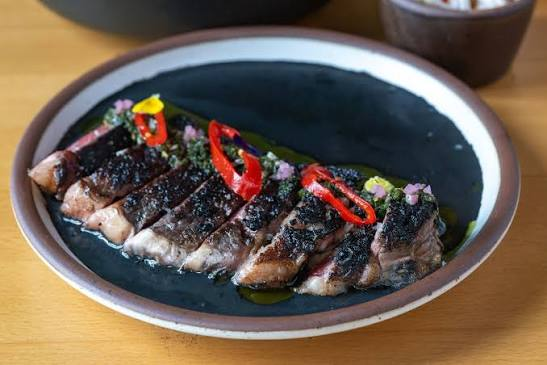

Satti
Traditional breakfast dish originating from the Tausug people of the Sulu Archipelago.
Source: View Source
Lokot-Lokot
Also called Zamboanga rolls, a traditional, sweet, and crispy Filipino delicacy.
Source: View Source

Chicken Pyanggang
A traditional Filipino dish originating from the Tausug people of the Sulu Archipelago in Mindanao.
Source: View Source

Tiyulah Itum
A dark, aromatic beef or goat soup blackened with roasted coconut meat.